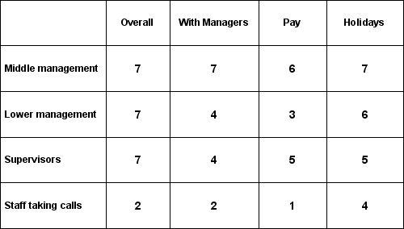
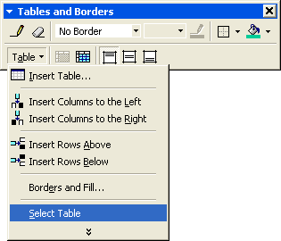

Free
powerpoint
Tutorials
|
Free
powerpoint
Tutorials
|
|
 home home |
Stay at Home and Learn | ||||
Table Backgrounds in PowerPoint |
|||||
|
Tables 1, 2, 3, 4, 5, 6 Charts Flow Charts
You can add a background colour, pattern, texture or image to the table you have created. We'll see how to do that first, and then tweak the borders. But your table should look like this, at the moment:  To add a background, click anywhere inside of your table. When you see the Tables and Borders dialogue box, click the Table button again, and click Select Table from the menu:  When the table is selected, click the Table button again. This time select Borders and Fill from the menu:
From the Format Table dialogue box that appears, click on the Fill tab:
Click the dropdown list to see the following: Select Fill Effects from the menu to see the Fill dialogue box appear. Or, if you just want a plain background colour, like the grey one at the start of this section, then choose a colour. For a more elaborate background, you can play around with the Fill
Effects and see which ones you like. We clicked on the Pattern tab: For the Foreground colour at the bottom, we picked a light grey. You can do this by clicking the dropdown box and selecting More Colors: You'll get a colour box popping up. This one: The light grey is the one selected, at the bottom. Do the same for the Background colour. We selected one of the blues. Finally choose a pattern from those available. Click OK on all the dialogue boxes to see what your table looks like. Here's ours: Notice that we've also changed the font colour (but you should know how to do this by now).
The borders don't look too good, though. You can format them, but it is tricky!
|
||||